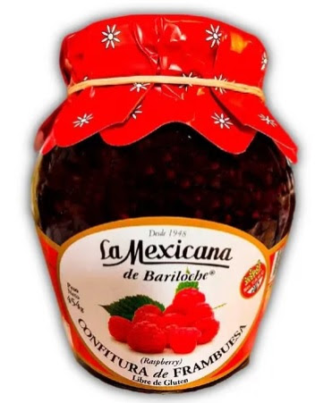

Acerca de 
- Categoria: Elaborados orgánicos
- Cliente: La Mexicana de bariloche
- Producen desde: 1948
- Descuento exclusivo Rutas Orgánicas:
- Escanee el código y presente digitalmente en el establecimiento
Nuestra tierra. Nuestra pasión.
Se produce con frutas de chacras orgánicas certificadas y azúcar orgánica y sin tacc certificada, implementando sistema de trazabilidad en la producción.
Las frutas de origen silvestres son recolectadas por personas que trabajan con la planta desde hace mas de 20 años, brindándoles capacitación para evitar la contaminación cruzada en la recolección de las frutas.
La planta se encuentra certificada para la producción Libre de Gluten y Orgánica.
Volver al Portfolio de productos